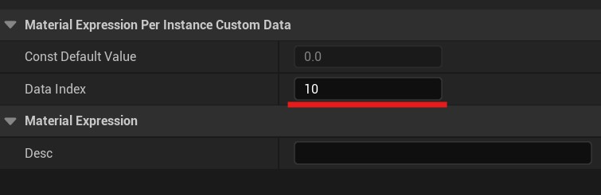
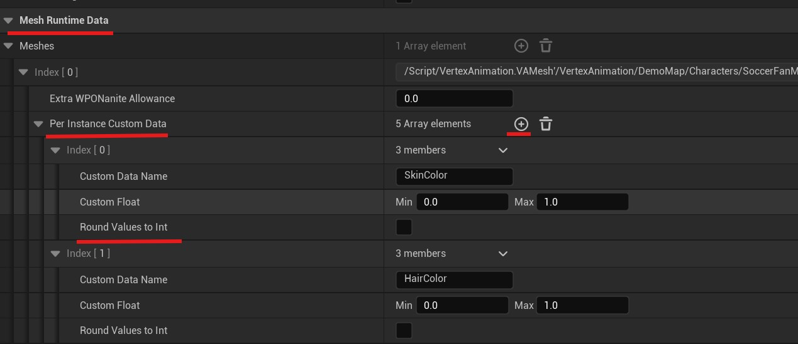

Custom Data - Instance Variations
This page details the custom data settings in the VA Asset Editor, which allow you to create variations between instances of your vertex animated meshes.
Per Instance Custom Data
The Per Instance Custom Data system allows you to inject randomized or controlled float values into your instanced materials. This creates visual diversity across instances without the need for multiple materials or meshes. Each custom data entry consists of:
- Custom Data Name: A unique identifier used to reference this parameter in your materials
- Custom Float Range: Minimum and maximum values for the parameter
- Round Values to Int: Option to round the generated values to whole numbers

Setup
To set up your custom data, follow these steps:
Step 1: Add Per Instance Custom Data Node
In your material, add a Per Instance Custom Data node
Step 2: Set Data Index
When creating your first Custom Data node, assign it a Data Index of 12. Indices 0-11 are reserved for system functionality so do not use these indices. Instead start at 12. For each additional Custom Data node, increment the index value (13, 14, etc.).

Step 3: Connect ScalarParameter
Add a ScalarParameter node and name it the name of your Custom Data. Plug the output into the PerInstanceCustomData node input.

Step 4: Add Entry in VA Asset Editor
In the VA Asset Collection Editor window, locate the Mesh Runtime Data section and add a new entry to the Per Instance Custom Data list.
Step 5: Configure Custom Data Entry
Enter the same Custom Data Name you used for the ScalarParameter in your material. Note that entries in this list correspond sequentially to Per Instance Custom Data Indices in the material itself: the first entry maps to Data Index 12, the second to Index 13, and so on.
Step 6: Set Value Range
Define the variation range by setting minimum and maximum values in the Custom Float fields. Enable the checkbox below to round values to integers if needed.

Step 7: Reapply Custom Data
Remember to Reapply Custom Data when you are done.

Usage Examples

You can use custom data for various effects, such as:
- Create color variations by connecting the float value to material color parameters
- Adjust material properties like roughness or metallic values per instance
- Control texture tiling or blending between different textures
- Implement any other material parameter variations you can imagine
How It Works
When the instance is spawned, each custom float parameter will generate a value within its specified range. These values can then be accessed within your material graphs to create unique variations for each instance.
See Also
- VA Asset Collection - Main editor overview
- VA Editor - Animation Settings - Configure animation-related settings
- VA Editor - Mesh Settings - Configure mesh-related settings
- VA Instanced Mesh Component - Use VA Asset Collections with multiple characters